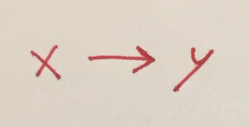
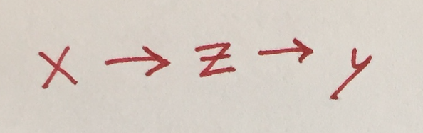
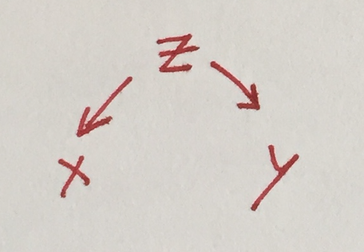
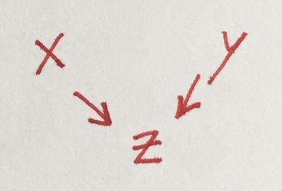

What should be in your regression?
Saturday September 12, 2020
If you're fitting a model in the hopes of better understanding the effect of x on y, then including another predictor variable z could be necessary, or could be harmful. Deciding whether to control for z depends on identifying how the variables are causally related.
- Simple direct causation
- Mediated causation: don't control for z
- Common cause (confounding): control for z
- Common effect (collider): don't control for z
- More complicated cases
These examples vary the data generating process (which isn't possible in practice) in order to illustrate what happens in each case when you do or don't control for z.
The R code uses random normal data, additive relationships, and linear regression. With real data and processes, other modeling methods may be more appropriate.
Simple direct causation

Say the reality is that x influences y (not the reverse) and no other variables are involved.
x = rnorm(100)
y = x + rnorm(100)
summary(lm(y ~ x))
## Estimate Std. Error t value Pr(>|t|)
## x 1.07747 0.11931 9.031 1.53e-14 ***The estimate of 1.077 is close to the true value of 1. The very low p-value (with three stars) indicates confidence that there is a non-random relationship between x and y.
Mediated causation: don't control for z

Here, the reality is that x influences z, which then influences y.
In this case, x really does influence y, so you're right to look for the relationship. And it might be tempting to control for z, perhaps because of a desire to “isolate” the effect of x.
If you include z in your regression, the desired estimate of the effect of x will disappear.
x = rnorm(100)
z = x + rnorm(100)
y = z + rnorm(100)
summary(lm(y ~ x + z))
## Estimate Std. Error t value Pr(>|t|)
## x -0.146874 0.135695 -1.082 0.282
## z 1.127586 0.087819 12.840 <2e-16 ***Including z makes it appear that x has no significant influence on y, which is incorrect.
summary(lm(y ~ x))
## Estimate Std. Error t value Pr(>|t|)
## x 1.11140 0.15343 7.244 1e-10 ***Leaving z out gives a good estimate of the effect of x.
Common cause (confounding): control for z

In this case, the reality is that z influences both x and y, which are otherwise unrelated.
This is an extreme example, in the sense that you'd be totally wrong to look for an effect of x on y in this case. The case where there's also a direct connection between x and y is similar, but for simplicity this example doesn't have one.
If you don't include z in your regression, the relationship between x and y could be misleading.
z = rnorm(100)
x = z + rnorm(100)
y = z + rnorm(100)
summary(lm(y ~ x))
## Estimate Std. Error t value Pr(>|t|)
## x 0.56257 0.10365 5.428 4.14e-07 ***There is a relationship between x and y, but it's because of z, not because of x. The regression result ignoring z could easily be misinterpreted.
summary(lm(y ~ x + z))
## Estimate Std. Error t value Pr(>|t|)
## x 0.03608 0.10590 0.341 0.734
## z 1.05814 0.13556 7.806 6.93e-12 ***With z in the model, the result correctly indicates that z is the influencing factor.
Common effect (collider): don't control for z

Here, the reality is that x and y are completely unrelated, but they both influence z.
As with common cause, it's more interesting when there's also a direct connection between x and y, but the behavior is similar and this example keeps things simpler.
Somewhat surprisingly, if you include z in your regression, you'll see evidence that both z and x influence y.
x = rnorm(100)
y = rnorm(100)
z = x + y + rnorm(100)
summary(lm(y ~ x + z))
## Estimate Std. Error t value Pr(>|t|)
## x -0.46951 0.08831 -5.317 6.76e-07 ***
## z 0.44439 0.04971 8.939 2.62e-14 ***This is a case of “explaining away.”
summary(lm(y ~ x))
## Estimate Std. Error t value Pr(>|t|)
## x -0.11308 0.10586 -1.068 0.288Without z in the regression, the result correctly indicates no relationship between x and y.
More complicated cases
With a more complex causal graph, it may not be obvious what you need to control for, or it may be that conventional methods of control aren't sufficient. Methods like Judea Pearl's do-calculus might be helpful.
Thanks to Erica Blom, Ben Klemens, and Jonathan Robinson for providing helpful feedback.